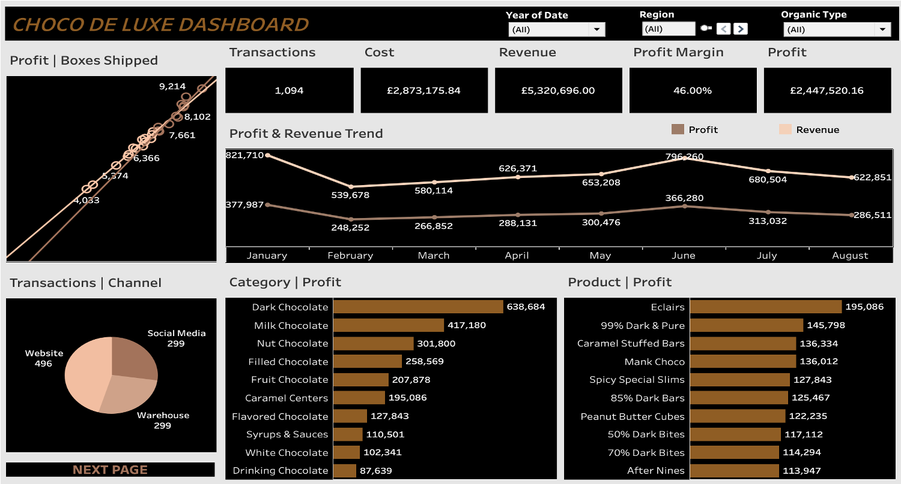
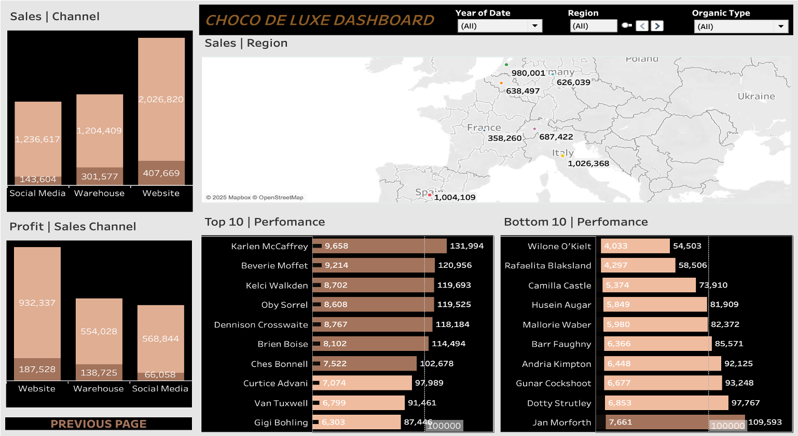

Sales & Regional Performance Analytics
Client: Choco de Luxe | Industry: Premium Food & Beverage | Tool: Tableau
A two-view Tableau dashboard analysing profitability, regional performance, channel effectiveness, and salesforce productivity across European markets.


Tip: Swipe/trackpad left-right or click the dots to view the next dashboard.
1. Business Problem
Choco de Luxe had built a strong premium brand across European markets, but performance varied significantly by region, sales channel, and individual salesperson — and the business lacked the analytical infrastructure to see it clearly. Management could not confidently answer which cities were underperforming, which channels were truly profitable versus simply high-volume, or which salespeople were driving results versus falling short of targets.
The analysis was designed to support strategic decisions across three areas:
- Where to focus regional expansion and investment
- Which channels and products to prioritise for profitability
- How to manage salesforce performance more effectively
2. Data Overview
The analysis uses a star schema with a central sales fact table connected to three dimension tables:
- Sales Fact Table: Transactions, Revenue, Cost, Quantity (Boxes Shipped), Date
- Product Dimension: Product name, category, production cost, treatment type
- Location Dimension: City, region, country
- Salesperson Dimension: Salesperson ID, name, assigned region
GDPR Note: Salesperson data was used for performance benchmarking in an aggregated, professional context. No sensitive personal data was included in outputs.
3. Data Cleaning & Preparation
What Was Removed
- Duplicate transaction records identified through key matching across sales and product tables
- Transactions with missing location or salesperson assignment
What Was Transformed
- Date fields structured to enable year, quarter, and month-level time series analysis
- Revenue, cost, and profit calculated and validated at transaction level before aggregation
- Products categorised by type (Dark, Milk, White Chocolate) and organic status
New Calculated Fields Created
- Gross Profit: Revenue − Cost of Goods
- Profit Margin (%): Gross Profit ÷ Revenue × 100
- Salesperson Profit Contribution: Total profit attributed per salesperson
- Performance vs Target: Profit contribution measured against the €100,000 benchmark
4. Data Analysis
Key KPIs Tracked
- Total Transactions
- Total Revenue, Cost, and Profit
- Profit Margin (%)
- Boxes Shipped
- Salesperson Profit Contribution vs €100,000 target
Key Trends & Patterns
- Sales trends reveal seasonal demand peaks mid-year, with a consistent dip during summer months across most markets.
- A strong positive correlation exists between shipment volume and profit, indicating the business scales efficiently.
- Website sales deliver the strongest profit margins across all channels, while social media generates high volume at significantly lower margins.
- Dark Chocolate products lead profitability across regions, supporting the case for premium positioning.
- Italy, Spain, and Germany are the top-performing markets by profit contribution.
Insights
- The channel margin gap is a strategic priority. If social media volume is being achieved at the expense of margin, the business may be optimising for growth over profitability — and those channels warrant scrutiny.
- Dark Chocolate's profitability lead reflects premium pricing power. Product mix decisions should protect and expand this segment, not dilute it through discounting.
- Mid-year demand peaks are predictable and under-exploited. The consistency of the pattern across markets suggests pre-season campaigns could capture a larger share of peak demand.
- Italy, Spain, and Germany represent a proven expansion blueprint. Understanding what drives performance here could inform how Choco de Luxe approaches lower-performing regions.
5. Recommendations
- Rebalance channel investment toward website sales, where margins are strongest. Evaluate whether social media spend generates proportionate commercial return.
- Protect and prioritise the Dark Chocolate product range in pricing, marketing, and distribution decisions.
- Develop a mid-year sales campaign calendar to capture demand during the identified peak window, particularly in top-performing markets.
- Set individual salesperson development plans based on profit contribution data — recognising high performers and supporting those below the €100,000 target.
6. Limitations
- The dataset covers European markets only — global performance dynamics are not reflected.
- Channel attribution is based on recorded sales channel data; multi-channel customer journeys are not captured.
- Salesperson targets are uniform at €100,000 — this may not account for regional differences in market opportunity or pricing dynamics.
- Production cost data is assumed to be stable across the period; commodity price fluctuations are not modelled.
Business Impact
The Tableau dashboards give Choco de Luxe's commercial and strategic teams a clear, evidence-based foundation for decision-making. Channel and product insights support smarter resource allocation. Regional performance data guides expansion planning. And salesperson benchmarking creates accountability grounded in data rather than perception.
Skills Demonstrated
Tableau • Profitability Analysis • Geographic Analytics • KPI Design • Sales Performance Tracking • Dashboard Storytelling